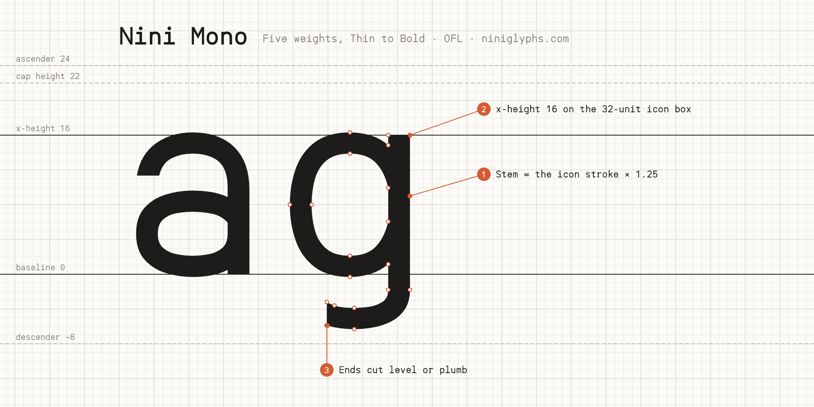
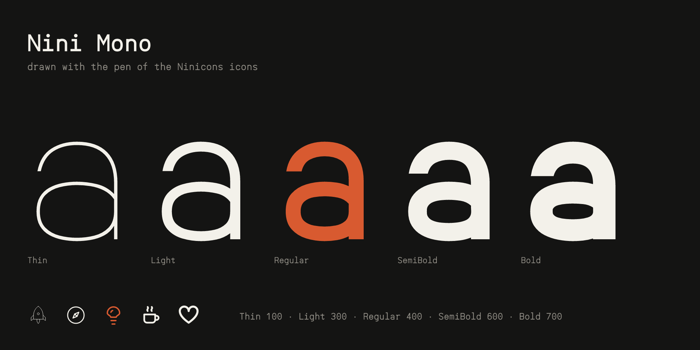
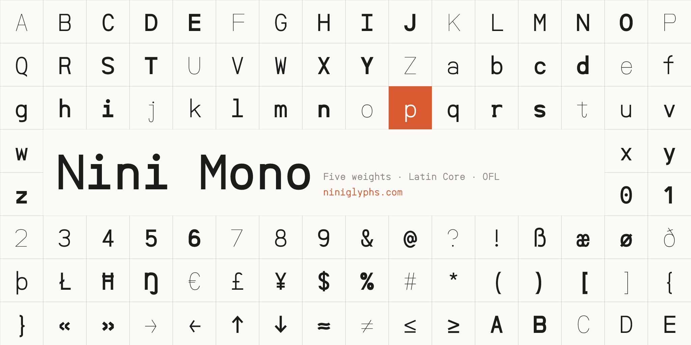

Nini Mono is the monospaced companion to Nini Sans, drawn with the same pen as the Ninicons icon set, in five weights from Thin to Bold. It sets the Nini Sans letters on an 18-unit cell (0.5625 em), close to JetBrains Mono's texture at the same x-height, with its spacing fitted against JetBrains Mono and Geist Mono.

Letters move part of the way towards an even width, as monospaced faces' do, while the pen keeps its width, so narrow letters open and wide ones close up without losing weight; where more than two strokes cross a cell (m, w, M, W) the pen thins. i, j, l and r take serifs and slabs, the zero carries a dot so it never reads as O, and % and @ are drawn to the cell.

For terminals and editors the vertical metrics hold every glyph in the cell, and the font carries the full box-drawing range, the block elements and the Powerline branch, lock and separator symbols, each drawn edge to edge so they join from cell to cell and row to row. It covers Google Fonts' Latin Core, with combining marks.

To contribute, see github.com/niniglyphs/nini-mono.